地政学
イスタンブールはボスポラス海峡を押さえ、黒海、地中海、バルカン、コーカサス、中東を結ぶ結節点です。首都ではなくても、海上交通、外交、軍事、移民、エネルギー回廊の緊張が街路と港に現れ、地域秩序の入口です。

🇹🇷 トルコ / ヨーロッパ・アジア / World City Atlas
ボスポラス海峡を挟んで二大陸に広がる都市です。帝国の記憶、海峡の地政学、港湾とバザール、祈り、移民、観光、地震リスクが同じ坂道とフェリーに重なります。
都市の骨格
イスタンブールは、黒海とマルマラ海、ヨーロッパ側とアジア側、旧市街と新市街を結ぶ都市です。橋、トンネル、港、坂道、フェリーが、政治史と日常の移動を同じ地図に重ねています。
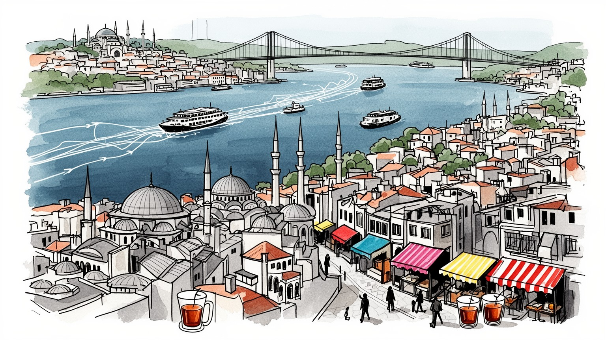
イスタンブールはボスポラス海峡を押さえ、黒海、地中海、バルカン、コーカサス、中東を結ぶ結節点です。首都ではなくても、海上交通、外交、軍事、移民、エネルギー回廊の緊張が街路と港に現れ、地域秩序の入口です。
金融、観光、繊維、食品、港湾物流、建設、小売、メディアが大きな雇用を作ります。バザールの商人、工房、ホテル労働、配送、フェリー、清掃、移民労働も都市を支え、通貨不安と家賃上昇が暮らしに日々響きます。
イスラムの礼拝と祝祭が都市の暦を作り、ギリシャ正教、アルメニア教会、ユダヤ教の記憶も地区に残ります。アヤソフィア、モスク、墓地、聖堂、食の習慣が重なり、帝国都市の多層性が日常の所作に息づいています。
旧市街、海峡フェリー、ガラタ、カドゥキョイ、宮殿、バザールは強い観光資源ですが、住民には通勤、住宅、地震、物価、混雑が日々の条件です。観光の収入と生活の負担が同じ坂道で交差する都市です。今も揺れます。
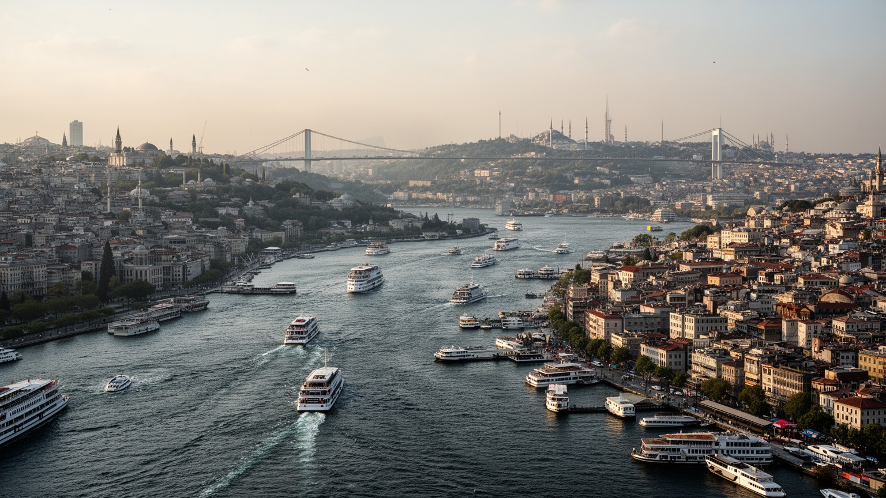
イスタンブールの重要性は、まずボスポラス海峡の幅と流れから始まります。黒海沿岸の港から出た船は、ここを通ってマルマラ海、ダーダネルス海峡、地中海へ向かいます。海峡は景観である前に、穀物、燃料、軍艦、観光船、通勤フェリーが同じ水面を使う国際的な通路です。ヨーロッパ側とアジア側を結ぶ橋と海底トンネルは都市交通を便利にしましたが、地政学的な緊張を消したわけではありません。黒海情勢、ロシア、ウクライナ、コーカサス、バルカン、中東の動きは、港湾管理、保険、物流、外交の言葉として都市に届きます。丘に広がる住宅地、旧市街の半島、金角湾、フェリー桟橋を重ねて見ると、イスタンブールは二大陸をまたぐ記号ではなく、狭い水路を毎日調整しながら生きる都市だと分かります。海峡を渡る時間は通勤であり、観光であり、国家の境界を意識する瞬間でもあります。さらに水流、霧、強風、船舶事故への備えは、港湾当局だけでなく通勤者や漁業者の生活にも関わります。海峡沿いの高級住宅と古い集落、軍事施設、大学、茶店が近くに並ぶため、地政学は遠い国際ニュースではなく、窓から見える水面の使われ方として経験されます。地図の中心に細い青い線を置くと、都市の政治、経済、住宅価格までつながって見えます。小さな桟橋も国際都市の入口になります。ここが都市の要です。
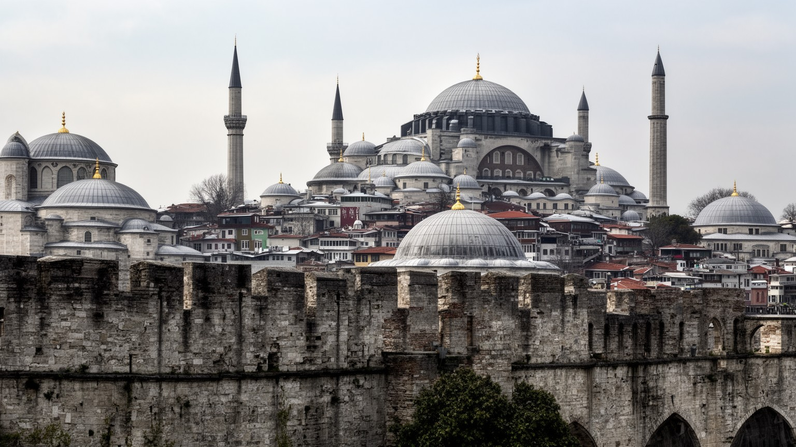
イスタンブールは、コンスタンティノープルとして東ローマ帝国の首都であり、のちにオスマン帝国の中心となった都市です。そのため街の記憶は一つの時代に閉じません。城壁、貯水槽、教会、宮殿、モスク、墓地、木造家屋、近代の官庁建築が近い距離で並び、支配者の交代が都市を完全に消し去らず、用途と意味を変えながら積み重なったことを示します。アヤソフィアはその象徴ですが、帝国の記憶は有名建築だけにあるわけではありません。旧市街の坂、商店、職人街、宗教学校、港への道にも、皇帝の都とスルタンの都が重なります。近代トルコの首都はアンカラへ移りましたが、イスタンブールは人口、文化、金融、出版、観光、大学教育の中心として力を保ちました。学生が歴史地区を通学し、子どもが広場で遊び、高齢者が茶店で新聞を読むため、帝都の記憶は生活の時間にも入り込みます。歴史は保存物ではなく、政治的な意味を帯びて現在の街を動かします。征服、改宗、近代化、共和制、世俗主義、宗教復興の記憶は、建物の説明板だけでなく、祝日、学校教育、観光案内、広場の使い方にも現れます。過去をどう語るかは、誰が都市の正統な継承者なのかという問いにつながります。だから歴史地区を歩くことは、石の古さを見るだけでなく、現在の社会が過去をどのように選び直しているかを見ることでもあります。
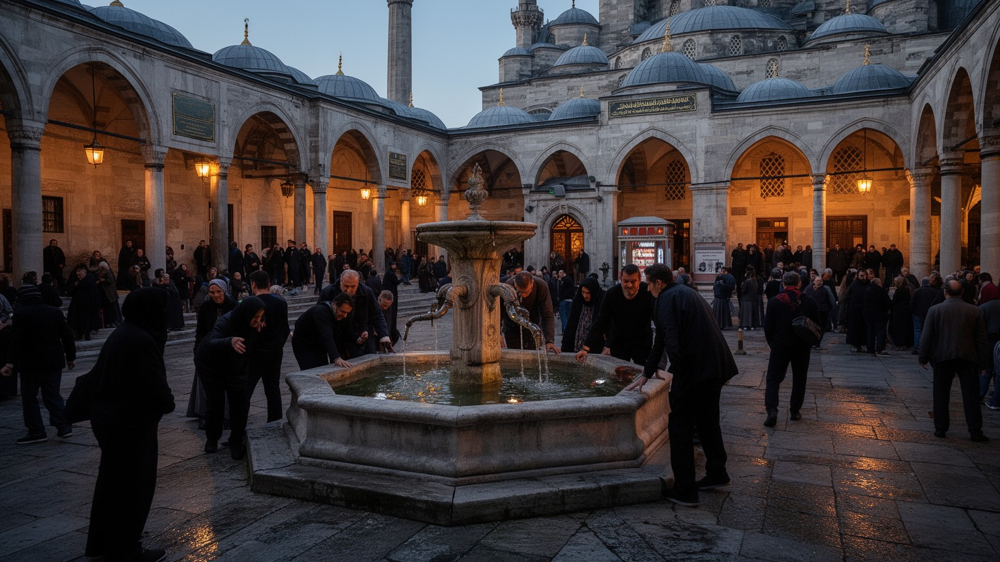
イスタンブールの宗教生活は、巨大なモスクの姿だけでは説明できません。礼拝の呼びかけ、ラマダンの夕食、犠牲祭、墓参、慈善、近所の小さな礼拝所が、住民の時間を区切ります。スルタンアフメト、スレイマニエ、エユップのような場所は観光名所であると同時に、祈り、学び、葬送、家族の記憶を支える生活の場です。同時に、ギリシャ正教、アルメニア使徒教会、カトリック、ユダヤ教の歴史も、地区の名前、墓地、学校、食、古い商店に残っています。人口構成は大きく変わりましたが、少数派の存在は帝国都市の多層性を示す重要な手がかりです。宗教は対立の原因としてだけでなく、互助、教育、貧困支援、日々の作法として働きます。観光客が聖堂やモスクを訪れるとき、その空間は写真の背景ではなく、信仰を持つ人が今も使う場所です。イスタンブールを読むには、壮麗な建築と静かな共同体の両方を見る必要があります。礼拝時間に店を閉める人、断食月に家族で食卓を囲む人、少数派学校を守る人、墓地を管理する人の姿は、宗教が都市の制度と感情の両方に関わることを示します。宗教施設は災害時や貧困時の相談場所にもなり、都市の見えにくい安全網として働きます。違う祈りが近い距離で続くことは、緊張を含みながらも、都市の記憶を厚くしています。信仰は都市の時間を整える力です。
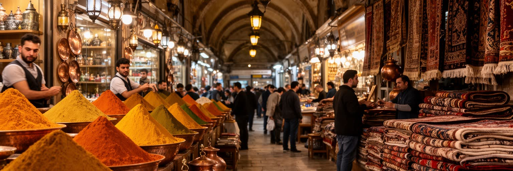
イスタンブールの経済を読むとき、金融地区や観光ホテルだけでなく、バザール、問屋街、工房、小売店、食品市場を見る必要があります。グランドバザールやエジプシャンバザールは観光の舞台ですが、商いの技術、信用、仕入れ、人脈、修理、値付け、言語の交渉が積み重なる労働の場でもあります。繊維、皮革、宝飾、家具、食品、土産物、日用品は、中心部の店だけで完結せず、郊外の工房、倉庫、配送、港、空港、家族経営の小さな事務所と結びつきます。観光客が増えると売上は伸びますが、家賃や通貨の不安、輸入品価格、季節変動も働く人にのしかかります。若い販売員、職人、移民労働者、清掃員、茶を運ぶ人、荷を担ぐ人が、都市の華やかな商業を支えます。値段交渉の楽しさの背後には、生活費と仕入れの計算があります。バザールは過去の遺産ではなく、世界市場と家計が出会う現役の経済装置です。観光向けの商品と地元向けの日用品が同じ通路に並ぶため、価格の変化は都市の二つの顔を映します。客を呼び込む声、焼き栗やとうもろこしの屋台、靴磨き、茶の配達、荷車の動きは、金融統計には出にくい路上経済の厚みです。都市の雇用は大企業だけでなく、こうした細かな商いの連鎖にも支えられています。店を継ぐか、郊外へ移るか、オンライン販売へ向かうかという選択も、都市経済の変化を映します。
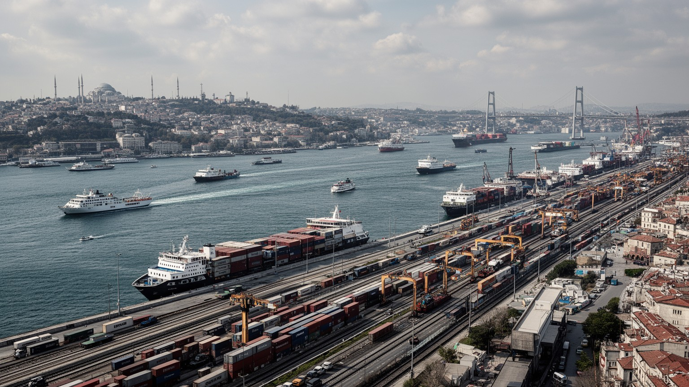
イスタンブールの港湾と物流は、旧市街の絵葉書には収まりません。マルマラ海沿岸、金角湾、郊外の工業地帯、空港、幹線道路、鉄道、倉庫が、都市圏の生産と消費を結んでいます。食品、衣料、機械、建材、燃料、通販の荷物、観光ホテルの備品は、港と道路を通って毎日動きます。近年の大規模インフラは、都市をヨーロッパ、アジア、中東、中央アジアへ向けた結節点として強めましたが、同時に郊外の土地利用、環境負荷、交通渋滞、労働条件を変えています。物流は効率が高いほど見えにくくなりますが、遅れや通貨変動、燃料価格の上昇が起きると、店頭価格や建設費にすぐ響きます。海峡を行く船、空港の貨物、深夜のトラック、フェリーの補給は、観光客の視界の外で都市を維持しています。イスタンブールの経済力は、歴史的中心だけでなく、周縁部の倉庫、港湾労働、運転手、整備工、通関の実務に支えられています。港湾都市としての強さは、同時に脆さでもあります。事故、渋滞、悪天候、国際制裁、燃料価格の変化は、物流網を通じて市場や工事現場に広がります。大型開発が進むほど、働く人の通勤、環境への影響、沿岸の公共利用をどう調整するかが問われます。物流の地図を読むと、観光都市の裏側で重い都市が動いていることが分かります。港の仕事は、都市の毎日を静かに支えます。
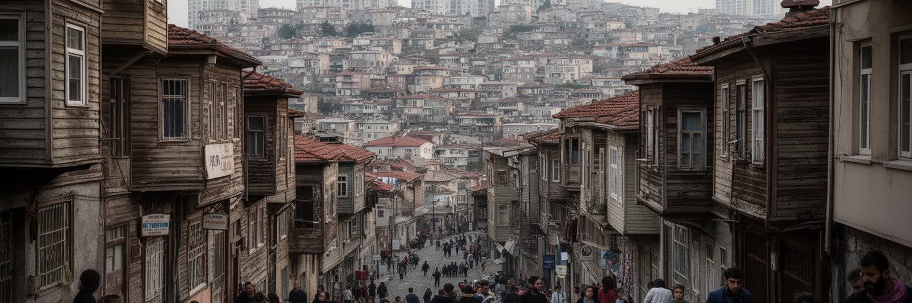
イスタンブールは長く人を引き寄せてきた都市です。アナトリア各地からの国内移住、バルカンや黒海周辺とのつながり、シリアなどからの避難民、留学生、観光業で働く人が、地区ごとの言葉、料理、労働市場を変えてきました。急速な人口増加は住宅を押し広げ、郊外の集合住宅、丘陵地の密集地区、再開発された高層住宅、古い木造家屋の残る通りを並存させています。家賃の上昇、通貨不安、短期滞在需要は、住民が住み続ける力に影響します。移民にとっては、仕事、在留資格、学校、医療、言語、差別、住宅契約が生活の壁になります。再開発は耐震性や設備を改善する一方、古くからの住民や小さな店を遠ざけることもあります。フェリーやメトロで中心へ通えることは大きな利点ですが、移動時間と交通費は家計を圧迫します。イスタンブールの住宅論点は、部屋の数だけでなく、誰が都市の中心に届き、誰が周縁へ押し出されるかという参加の論点です。新しい住宅地は安全性や設備を売りにしますが、仕事場、学校、病院、親族、礼拝所から遠くなれば生活の支えは弱まります。地域のつながりを失った人ほど、災害時や失業時に孤立しやすくなります。住宅政策は、建物を増やすだけでなく、移民や低所得世帯が都市に残れる条件を整える必要があります。都市の包容力は、最も弱い借り手の暮らしに表れます。
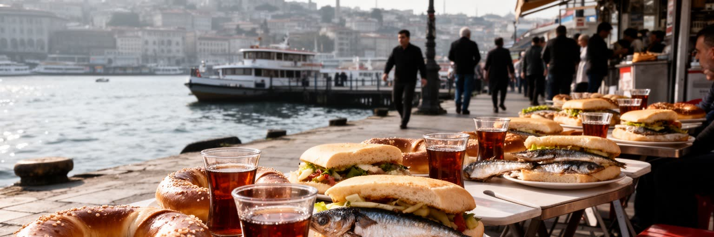
イスタンブールの日常は、食と移動の近さに表れます。朝のパン、シミット、茶、魚、ケバブ、家庭料理、菓子、路上の軽食、フェリーの売店は、観光の楽しみである前に住民の日々の時間を支えます。市場では野菜、香辛料、魚、チーズ、オリーブ、乾物が並び、地区の所得や出身地の違いも見えてきます。フェリーで海峡を渡る通勤は、単なる交通ではなく、都市の広がりを身体で感じる日課です。食文化は豊かですが、物価上昇は食卓に直接響きます。外食の価格、家賃、燃料、輸入品、観光客向けの店の増加は、住民の選択を狭めることがあります。家庭の台所、職場の昼食、屋台、宗教的な食の作法、ラマダンの断食明けの食事は、都市の社会関係を作ります。食を追うと、イスタンブールが帝国の料理の記憶を持ちながら、現代の労働時間と家計の圧力の中で変わり続けていることが分かります。味は歴史であり、同時に生活費の論点でもあります。夜のカドゥキョイやベイオールでは、屋台の湯気、楽器の音、若者の会話、終電を気にする人の足音が食の時間を延ばします。食を作る人、運ぶ人、皿を洗う人、夜遅くまで営業する人の労働を含めて見ると、日常の豊かさは都市の不平等とも結びついています。茶の一杯や魚の昼食にも、海峡都市の経済と家族の記憶が入っています。食卓は都市の縮図です。
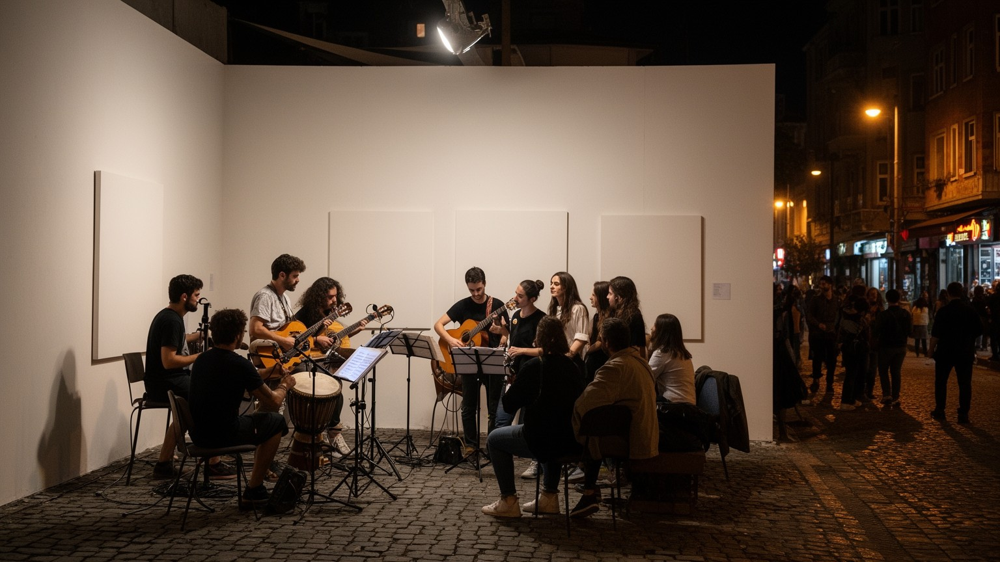
イスタンブールはトルコの文化産業を大きく担う都市です。出版、テレビ、映画、音楽、広告、デザイン、現代美術、大学、劇場、クラブ、書店が集まり、国内の流行と政治的な議論を発信します。ベイオール、カラキョイ、カドゥキョイのような地区では、古い建物、カフェ、ライブハウス、ギャラリー、若者文化、観光が重なります。一方で、表現の自由、検閲、政治的圧力、家賃上昇、文化施設の閉鎖は、作り手の活動に影響します。ガラタサライ、フェネルバフチェ、ベシクタシュの試合日は、フェリー、酒場、広場、地下鉄に応援歌と旗があふれ、サッカーが地区の帰属意識を強くします。文化は華やかなイベントだけではありません。翻訳者、編集者、舞台技術者、音響、照明、印刷、配信、学生のアルバイト、小さな書店が支える地味な労働の積み重ねです。帝国の記憶と共和国の近代化、宗教性と世俗性、ヨーロッパ志向と中東への接続が、作品や街の雰囲気に現れます。イスタンブールの文化を読むには、名所の写真だけでなく、どの声が発信され、どの場所が残りにくいのかを見る必要があります。カフェの会話、大学の講義、新聞の見出し、配信ドラマ、路上演奏は、政治と生活の温度を映します。観光化で洗練された地区ほど、若い作り手が家賃に耐えられず離れる危険もあります。表現の場を守ることは、都市の記憶を未来へつなぐ条件です。
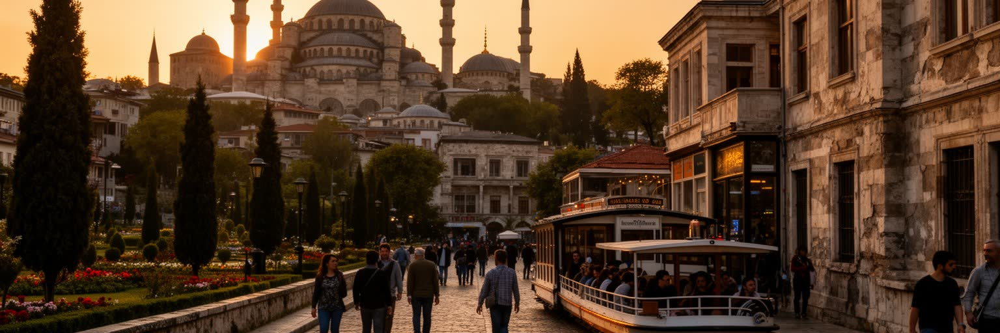
イスタンブール観光は、アヤソフィア、スルタンアフメト・モスク、トプカプ宮殿、地下宮殿、グランドバザール、ガラタ塔、ドルマバフチェ宮殿、ボスポラス遊覧へ人を集めます。これらは世界的な遺産であり、都市の収入源でもあります。しかし観光は、建物を保存するだけでは成り立ちません。混雑、行列、短期滞在、土産物店の増加、交通規制、住民向け店舗の減少は、旧市街の生活を変えます。歴史地区の石畳や木造建築は魅力である一方、維持費、耐震性、火災、観光収益の偏りという課題を抱えます。観光客が歩く道は、住民の通学路、礼拝への道、仕入れの動線でもあります。遺産を楽しむことと、そこで暮らす人の生活を守ることは切り離せません。イスタンブールの強さは、壮麗な建築が都市の中心に残るだけでなく、その周りで茶を飲み、働き、祈り、買い物をする日常が続く点にあります。名所の価値は、過去の威光と現在の生活が共存できるかで測られます。保存と活用の均衡は、入場料や修復工事だけで決まりません。住民が市場を使い、子どもが学校へ通い、礼拝者が静かに集まれることが、歴史地区の生命を保ちます。観光の成功は、記念写真の量よりも、名所の周辺で普通の暮らしが続くかに表れます。静かな朝の礼拝や市場の搬入も、遺産地区の大切な時間です。暮らしが残るほど、遺産は生きた場所になります。
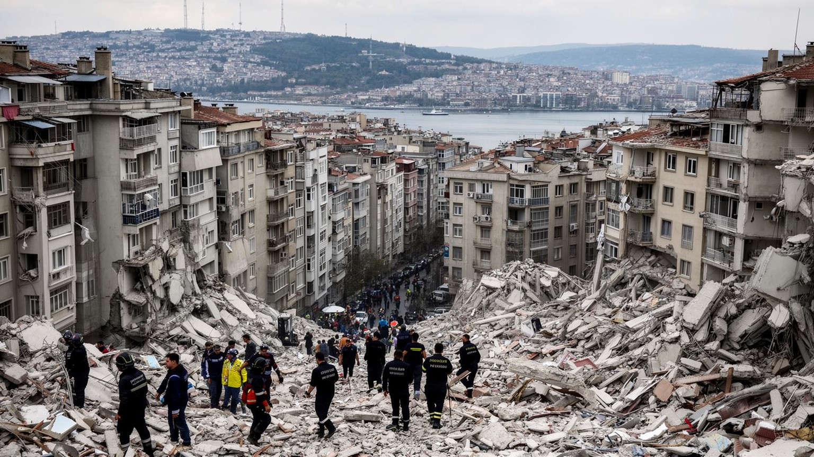
イスタンブールの未来を考えるうえで、地震リスクは外せません。マルマラ海周辺の断層帯は大きな被害をもたらす可能性があり、人口密度の高い住宅地、古い建物、急斜面、狭い道路、歴史地区、港湾施設、橋、トンネル、病院、学校が同時に問われます。耐震改修や都市更新は必要ですが、再開発が家賃上昇や立ち退きにつながると、防災が社会的な不公平を深めることもあります。災害時には、避難場所、飲料水、通信、医療、交通、外国人住民への情報、低所得者や高齢者への支援が重要になります。観光都市であることも論点です。訪問者は土地勘がなく、緊急時の案内を必要とします。地震への備えは行政だけの作業ではなく、学校、職場、宗教施設、町内の関係、建物所有者、交通事業者が関わる日常の制度です。イスタンブールの美しい坂道と古い街並みは魅力である一方、避難と救助の難しさも持ちます。強い都市とは壊れない都市ではなく、被害を小さくし、早く助け合える都市です。耐震化の費用を誰が負担するのか、仮住まいをどこに用意するのか、歴史的建物をどう守るのかは、技術だけでなく政治と生活の論点です。防災は地図上の危険区域を示すだけでは足りず、日常の近所づきあい、職場の訓練、多言語の情報、公共空間の確保まで含めて考える必要があります。備えの質は、災害後の回復時間を左右します。
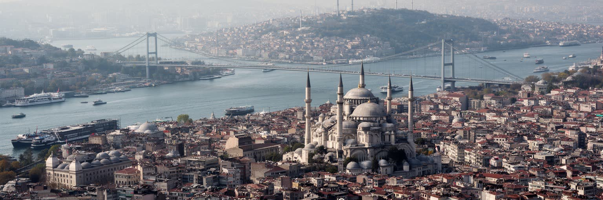
イスタンブールを世界都市として読む理由は、経済規模だけではありません。ボスポラス海峡は黒海と地中海を結び、帝国の記憶はヨーロッパ、中東、バルカン、コーカサスを一つの都市に重ねます。モスクの礼拝、少数派宗教の記憶、バザールの商い、港湾物流、移民の住宅、フェリー通勤、テレビや音楽、サッカー、観光、地震への備えが、同じ都市圏で互いに影響します。この都市は、東西の橋という単純な表現では足りません。橋の下には船が通り、丘には住宅が伸び、旧市街には祈りと商売が残り、郊外には物流と新しい暮らしが広がります。観光客が見る壮麗な建築と、住民が直面する物価、通勤、住宅、災害リスクは切り離せません。子どもの通学、高齢者の買い物、若者の夜遊び、屋台の呼び声まで含めて、都市は毎日使い直されています。海峡を渡るフェリーの上で、都市は過去の首都であり、現代の生活都市であり、地域政治の結節点でもあります。さらに、宗教と世俗、観光と暮らし、保存と再開発、中心と郊外が常に交渉しています。イスタンブールを理解することは、一つの文明の境界を見ることではなく、多くの境界が重なった場所で人びとがどう働き、祈り、移動し、住み続けるかを見ることです。だから海峡の美しさは、社会の複雑さと一緒に読む必要があります。そこに世界都市としての厚みがあります。